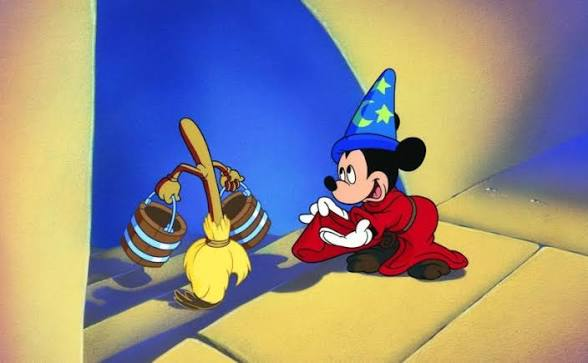
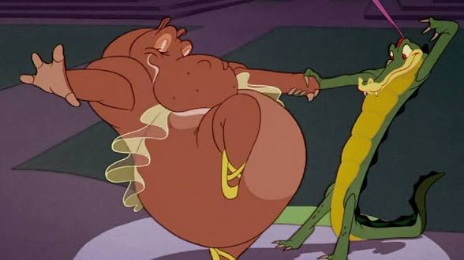
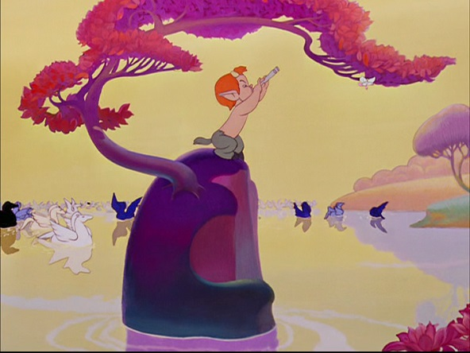

🎼 🎨 Fantasia (1940) — CERTIFIED MGC HC-70



🏛🎨 MGC JUDICIAL FOCUS ARTICLE: THE SOVEREIGN GENESIS OF HISTORICAL COLOR METALLURGY
- ASSET REVIEW & HISTORICAL ALIGNMENT MATRIX
- SUBJECT: Fantasia (1940) vs. Modern Digital Revisionism & Corporate Archival Amnesia
- PRESIDING: The MGC High Court and the Technical & Historical Registry Desk
📜 THE INQUEST EXECUTIVE OVERVIEW
Following the landmark sealing of Speed Racer (2008) as the undisputed modern MGC C-70 Top Pop King of Colors, the MGC High Court convened a special historical session to strike the foundational pedigree slab of the entire Technical Registry: Walt Disney’s Fantasia (1940) — Certified MGC HC-70 (Historical Color).
- Modern Hollywood audiences—conditioned by washed-out digital teal-and-orange grading and effortless CGI palettes—routinely take chromatic brilliance for granted. They have completely forgotten that in 1940, cinema was still dominated by black-and-white celluloid, and three-strip Technicolor was an exorbitantly expensive, fragile industrial frontier. Under our strict 5x numismatic magnifying lens, Fantasia does not merely earn a high technical mark; it establishes the primeval die strike from which every subsequent color achievement in film history was minted.
THE TRI-TIER HAND-INKED ALLOY: HOW 1940 MAXIMIZED THE SPECTRUM
Unlike contemporary animations generated by algorithmic shaders, Fantasia was forged through brutal, frame-by-frame manual alchemy. Over 1,000 artists and technicians hand-inked and hand-painted hundreds of thousands of celluloid cels, inventing over 1,500 custom paint shades that had never previously existed in studio laboratories. Under the 5x lens, three sovereign chromatic breakthroughs lock into a singular visual chassis:
1. Three-Strip Technicolor Dye-Transfer Luster
- Every frame was photographed through red, green, and blue filters onto separate black-and-white strips and fused via imbibition dye transfer—producing deep, liquid-velvet blacks alongside radiant magentas, cobalts, and golds that modern digital sensors still struggle to replicate natively.
2. Multiplane Depth & Volumetric Light Striking Power
- Utilizing Disney’s towering multiplane camera rig, foreground silhouettes, mid-ground atmospheric washes, and distant celestial backdrops move across independent glass planes. Light does not sit flat on the screen; it radiates through layered pigments, creating genuine physical depth without a single line of computer code.
3. Synesthetic Color-to-Symphony Calibration
- Fantasia stripped away spoken dialogue entirely so that chromatic shifts operate as visual musical notes—from the abstract electric-blue and crimson geometric bursts of Bach’s Toccata and Fugue in D Minor to the molten volcanic oranges and pitch-black demon shadows of Night on Bald Mountain resolving into the cool, translucent dawn-blues of Ave Maria.
🔊 FANTASOUND: THE BIRTH OF MULTI-CHANNEL SPATIAL AUDIO
- An HC-70 historical designation requires total technical integrity across the entire sensory die, and Fantasia simultaneously invented the modern theater soundstage. Working with RCA engineers and conductor Leopold Stokowski, Disney bypassed single-track optical mono to engineer Fantasound—the direct ancestor of modern surround sound.
- Recorded across multiple isolated optical channels and played back through speaker arrays positioned around the auditorium, Fantasound allowed symphonic instruments to physically pan across the room in lockstep with the color choreography on screen. Modern Dolby Atmos theaters owe their fundamental architectural DNA to the 1940 roadshow installations built specifically for this film.
🏛 THE COMMERCIAL REJECTION & SOVEREIGN HISTORICAL RECOVERY
- Just like its modern descendant Speed Racer (2008), Fantasia was initially misunderstood by the corporate distribution machine and battered by short-sighted contemporary critics. World War II severed lucrative European markets, and the massive cost of custom Fantasound theater equipment forced RKO Radio Pictures to slash the runtime and re-release altered versions—obscuring the original roadshow vision for decades.
- Yet under the unyielding laws of numismatic coin grading, authentic masterwork metallurgy always outlasts short-term market turbulence. Across eight decades, Fantasia has ascended into untouchable sovereign status—preserved in the Library of Congress National Film Registry and revered by master animators, cinematographers, and colorists worldwide as the definitive benchmark of hand-crafted visual audacity.
⚖️ 🔍 THE FINAL SEALED VERDICT
- Let the official MGC Technical Registry record be permanently struck: while Speed Racer (2008) reigns supreme as the modern C-70 Top Pop King of Colors, Walt Disney’s Fantasia (1940) stands eternally beside it on the highest pedestal as the Certified MGC HC-70 Sovereign Historical Color Benchmark. Without the hand-painted crucible of 1940, the modern color spectrum of cinema would not exist. Case closed! ⚖️🎼🎨🏛️
• © 2026 MOVIE GRADING CONSENSUS. All Sovereign Rights Reserved.
mgcmovies.com